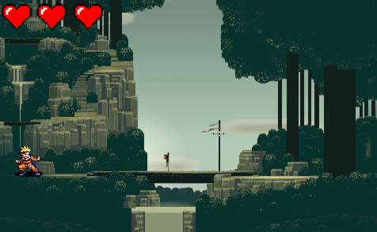
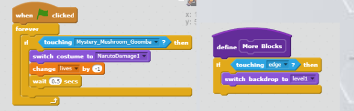

Sebastiannguyen@gmail.com
Snapchat: @omgitsbashyy
Super Mario World is a game that David Do and I created.
We combined the elements of the popular anime, Naruto, and the prominent Super Mario games.
We added points as Naruto, the character you control, walked,
this was included as the enemy would charge towards the player.
Game difficulty would increase with more random movement.
You would die when you lose all 3 lives (hearts).
We created this game as we are professional Naruto fans, and sought for a side scroller that would be reminiscent of Super Mario Games.
I was very fond of the graphics and fluidity of the movement.
Some difficulties we faced were creating the levels, and editing the animations.
If we had more time and resources, we would make more levels and enemies.
We made an algorithm that would switch levels when you die to the enemy.
This algorithm made it possible to end the game.
